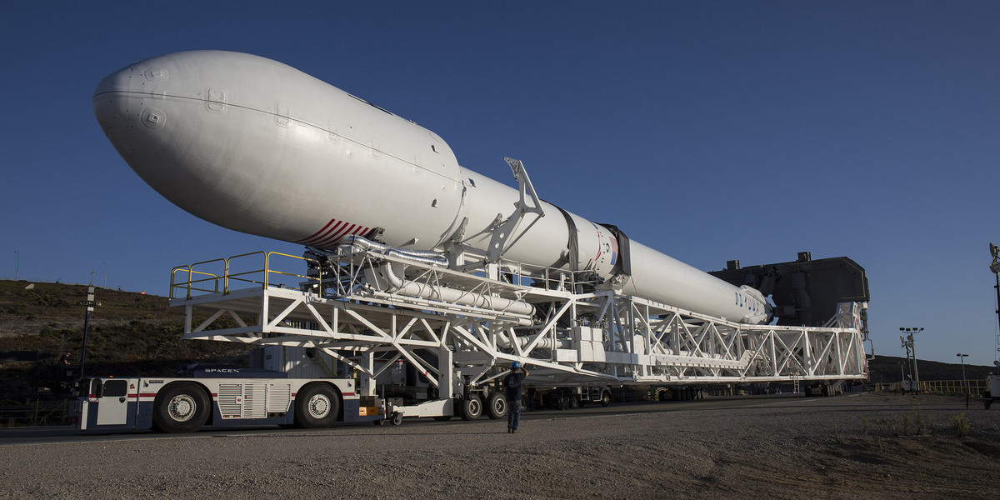
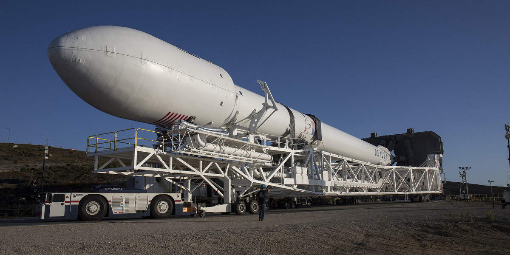
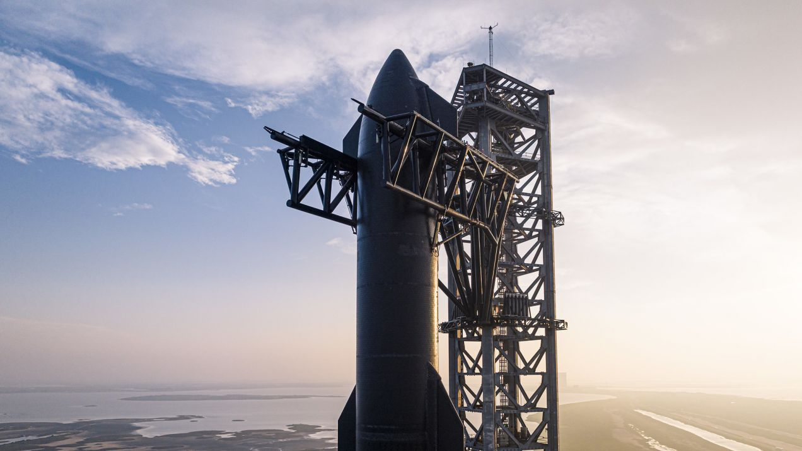
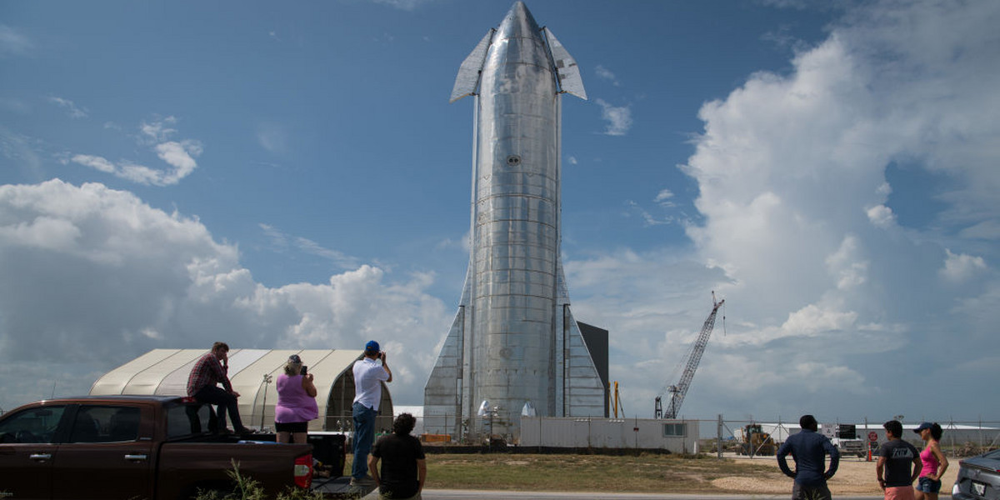
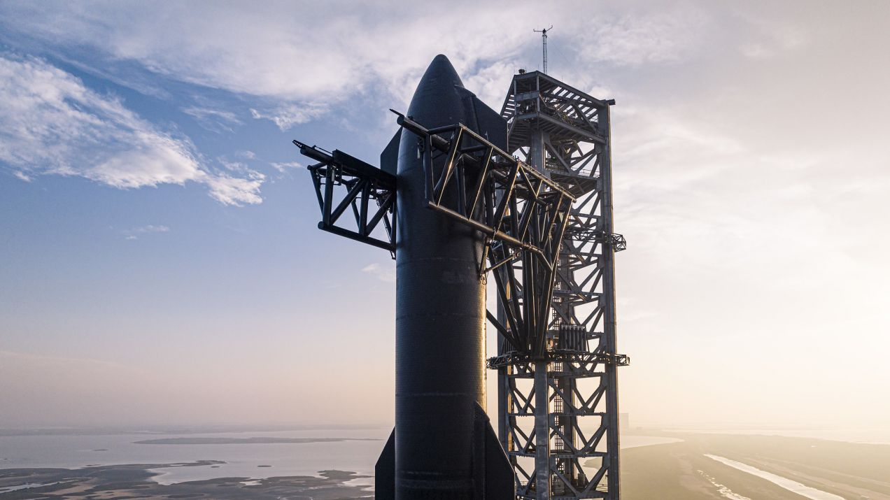
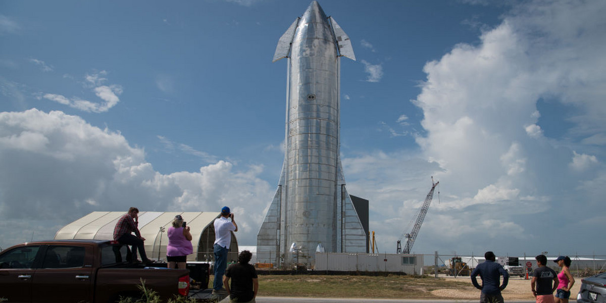

Falcon 1 is the first launch vehicle produced by SpaceX. Its maiden flight took place on March 24, 2006. The rocket had a payload capacity of about 670 kilograms to Low Earth Orbit (LEO) and was powered by the Merlin 1C engine, reaching an orbital speed of approximately 28,000 km/h. Unfortunately, the first three launches ended in failure. However, on September 28, 2008, Falcon 1 successfully reached orbit, becoming the first private rocket to achieve this feat.
 



 





/2023/01/17/image/jpeg/hstIa6uTAe6W2pHqjLULfHHJLaS7Gfpjygja859Q.jpg)